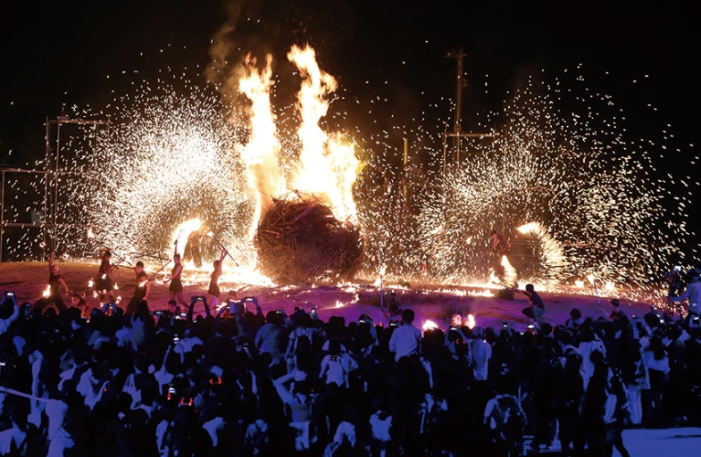
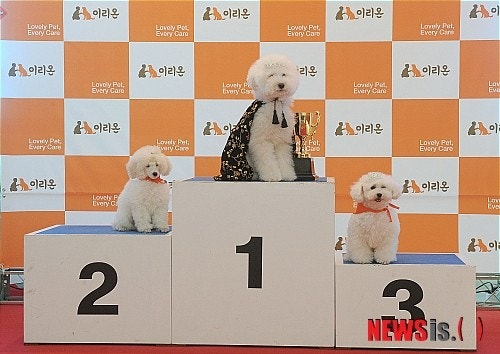

핫토픽
>
주말 체크인

춘천 마임 축제로 어서오세요!
2025 춘천마임축제는 '몸풍경'을 주제로 5월 25일부터 6월 1일까지 개최되며 개막난장 아!水라장을 시작으로 밤샘난장 도깨비난장까지 8일간 다양한 몸풍경을 춘천시 곳곳에서 선보인다.

강아지 모델 선발대회
17일 오전 서울 강남구 청담동 반려동물 종합 서비스 공간 이리온에서 슈퍼모델 강아지를 선발하고 있다.
전독시 영화화
10년 이상 연재된 소설이 완결된 날 소설 속 세계가 현실이 되어 버리고, 유일한 독자였던 ‘김독자’가 소설의 주인공 ‘유중혁’ 그리고 동료들과 함께 멸망한 세계에서 살아남기 위한 판타지 액션 영화